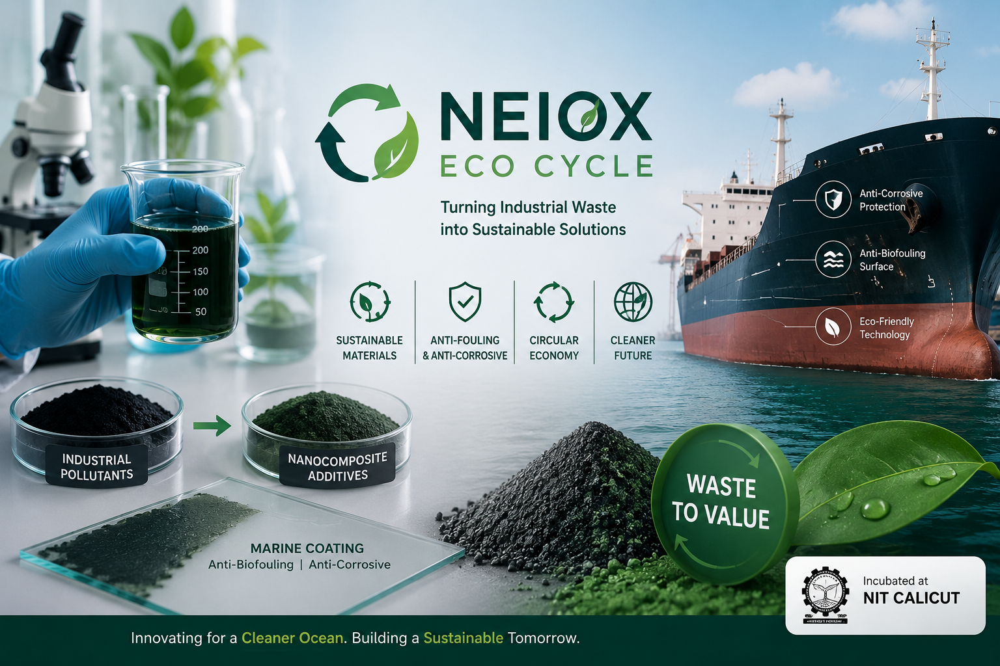

Neiox Eco Cycle Pvt. Ltd. is a Kerala-based climate-tech startup developing sustainable nanocomposite materials for marine coating applications.
By converting industrial pollutants into anti-biofouling and anti-corrosive additives, the company promotes circular economy principles while addressing environmental challenges in manufacturing and maritime industries.
Incubated at NIT Calicut, Neiox Eco Cycle is advancing innovative solutions for a cleaner, greener, and more sustainable future.
Neiox Eco Cycle focuses on transforming industrial waste streams into high-value nanocomposite materials for advanced marine coating applications. The company combines sustainability, materials science, and environmental innovation to create products that reduce ecological impact while improving industrial performance.
• Sustainable Nanocomposite Materials
• Marine Coating Technologies
• Anti-Biofouling Solutions
• Anti-Corrosive Additives
• Industrial Waste Valorization
• Circular Economy Technologies
• Climate-Tech Innovation
• Green Manufacturing Solutions
By converting industrial pollutants into useful engineering materials, Neiox Eco Cycle demonstrates how innovative technologies can create economic value while reducing environmental burden. Their solutions support sustainable manufacturing practices and contribute to cleaner maritime operations.
Incubated at the National Institute of Technology Calicut (NIT Calicut), Neiox Eco Cycle represents the next generation of science-driven startups focused on sustainability, environmental stewardship, and advanced material innovation.